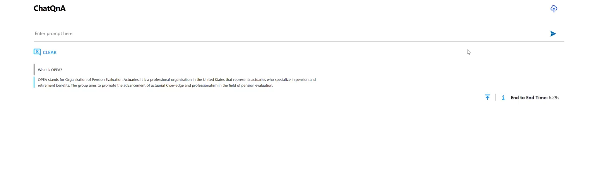

Getting Started with OPEA¶
This document specifically details the steps for deploying services on IBM Cloud, providing a tailored guide to help you leverage IBM’s cloud infrastructure to deploy the ChatQnA application from OPEA GenAI Examples. For additional deployment targets, see the ChatQnA Sample Guide
Understanding OPEA’s Core Components¶
Before moving forward, it’s important to familiarize yourself with two key elements of OPEA: GenAIComps and GenAIExamples.
GenAIComps is a collection of microservice components that form a service-based toolkit. This includes a variety of services such as llm (large language models), embedding, and reranking, among others.
While GenAIComps offers a range of microservices, GenAIExamples provides practical, deployable solutions to help users implement these services effectively. Examples include ChatQnA and DocSum, which leverage the microservices for specific applications.
Prerequisites¶
Create and Configure a Virtual Server¶
Navigate to IBM Cloud. - Click the Create resource button at the top right of the screen. Select Compute from the options available and select
Virtual Server for VPCSelect a location for the instance. Assign a name to it.
Under Stock Images, select Ubuntu 24.04 (
ibm-ubuntu-24-04-6-minimal-amd64-1)Select a virtual server.
Note: We recommend selecting a 3-series instance with an Intel(R) 4th Gen Xeon(C) Scalable Processor, such as
bx3d-16x80or above. For more information on virtual servers on IBM cloud visit Intel® solutions on IBM Cloud®.
Add an SSH key to the instance, if necessary, create one first.
Click on
Create virtual server.Once the instance is running, create and attach a
Floating IPto the instance. For more information visit this sitesshinto the instance using the floating IP (ssh -i <key> ubuntu@<floating-ip>)
Deploy the ChatQnA Solution¶
Use the command below to install docker on a clean virtual machine
wget https://raw.githubusercontent.com/opea-project/GenAIExamples/refs/heads/main/ChatQnA/docker_compose/install_docker.sh
chmod +x install_docker.sh
./install_docker.sh
Configure Docker to run as a non-root user by following these instructions
Clone the repo and navigate to ChatQnA
git clone https://github.com/opea-project/GenAIExamples.git
cd GenAIExamples/ChatQnA
Set the required environment variables:
export host_ip="localhost"
export HUGGINGFACEHUB_API_TOKEN="Your_Huggingface_API_Token"
Set up other specific use-case environment variables:
cd docker_compose/intel/cpu/xeon/
source set_env.sh
Now we can start the services
docker compose up -d
It takes a few minutes for the services to start. Check the logs for the services to ensure that ChatQnA is running.
For example to check the logs for the tgi-service:
docker compose logs tgi-service | grep Connected
The output shows Connected as shown:
tgi-service | 2024-10-18T22:41:18.973042Z INFO text_generation_router::server: router/src/server.rs:2311: Connected
Run docker ps -a as an additional check to verify that all the services are running as shown:
| CONTAINER ID | IMAGE | COMMAND | CREATED | STATUS | PORTS | NAMES |
|--------------|------------------------------------------------------------------------|------------------------|--------------|-------------|------------------------------------------------------------------------------------------|------------------------------|
| 3a65ff9e16bd | opea/nginx:latest | `/docker-entrypoint.\…`| 14 hours ago | Up 14 hours | 0.0.0.0:80->80/tcp, :::80->80/tcp | chatqna-xeon-nginx-server |
| 7563b2ee1cd9 | opea/chatqna-ui:latest | `docker-entrypoint.s\…`| 14 hours ago | Up 14 hours | 0.0.0.0:5173->5173/tcp, :::5173->5173/tcp | chatqna-xeon-ui-server |
| 9ea57a660cd6 | opea/chatqna:latest | `python chatqna.py` | 14 hours ago | Up 14 hours | 0.0.0.0:8888->8888/tcp, :::8888->8888/tcp | chatqna-xeon-backend-server |
| 451bacaac3e6 | opea/retriever-redis:latest | `python retriever_re\…`| 14 hours ago | Up 14 hours | 0.0.0.0:7000->7000/tcp, :::7000->7000/tcp | retriever-redis-server |
| c1f952ef5c08 | opea/dataprep-redis:latest | `python prepare_doc_\…`| 14 hours ago | Up 14 hours | 0.0.0.0:6007->6007/tcp, :::6007->6007/tcp | dataprep-redis-server |
| 2a874ed8ce6f | redis/redis-stack:7.2.0-v9 | `/entrypoint.sh` | 14 hours ago | Up 14 hours | 0.0.0.0:6379->6379/tcp, :::6379->6379/tcp, 0.0.0.0:8001->8001/tcp, :::8001->8001/tcp | redis-vector-db |
| ac7b62306eb8 | ghcr.io/huggingface/text-embeddings-inference:cpu-1.5 | `text-embeddings-rou\…`| 14 hours ago | Up 14 hours | 0.0.0.0:8808->80/tcp, [::]:8808->80/tcp | tei-reranking-server |
| 521cc7faa00e | ghcr.io/huggingface/text-generation-inference:sha-e4201f4-intel-cpu | `text-generation-lau\…`| 14 hours ago | Up 14 hours | 0.0.0.0:9009->80/tcp, [::]:9009->80/tcp | tgi-service |
| 9faf553d3939 | ghcr.io/huggingface/text-embeddings-inference:cpu-1.5 | `text-embeddings-rou\…`| 14 hours ago | Up 14 hours | 0.0.0.0:6006->80/tcp, [::]:6006->80/tcp | tei-embedding-server |
Interact with ChatQnA¶
You can interact with ChatQnA via a browser interface:
Under
Infrastructurein the left pane, go toNetwork/Security groups/<Your Security Group>/RulesSelect
CreateEnable inbound traffic for port 80
To view the ChatQnA interface, open a browser and navigate to the UI by inserting your externally facing IP address in the following: `http://{external_public_ip}:80’.
For more information on editing inbound/outbound rules, click here
A snapshot of the interface looks as follows:

Note: this example leverages the Nike 2023 Annual report for its RAG based content. See the ChatQnA Sample Guide to learn how you can customize the example with your own content.
To interact with the ChatQnA application via a curl command:
curl http://${host_ip}:8888/v1/chatqna \
-H "Content-Type: application/json" \
-d '{
"messages": "What is the revenue of Nike in 2023?"
}'
ChatQnA provides the answer to your query as a text stream.
Modify the message parameter in the curl command to continue interacting with ChatQnA.
What’s Next¶
Try GenAIExamples in-detail starting with ChatQnA example; this is a great example to orient yourself to the OPEA ecosystem.
Try GenAIComps to build microservices.
Get Involved¶
Have you ideas and skills to build out genAI components, microservices, and solutions? Would you like to be a part of this evolving technology in its early stages? Welcome!
Register for our mailing list:
General: https://lists.lfaidata.foundation/g/OPEA-announce
Technical Discussions: https://lists.lfaidata.foundation/g/OPEA-technical-discuss
Subscribe to the working group mailing lists that interest you
End user https://lists.lfaidata.foundation/g/OPEA-End-User
Evaluation https://lists.lfaidata.foundation/g/OPEA-Evaluation
Community https://lists.lfaidata.foundation/g/OPEA-Community
Research https://lists.lfaidata.foundation/g/OPEA-Research
Security https://lists.lfaidata.foundation/g/OPEA-Security
Go to the Community Section of the OPEA repo for Contribution Guidelines and step by step instructions.
Attend any of our community events and hackathons. https://wiki.lfaidata.foundation/display/DL/OPEA+Community+Events
Current GenAI Examples
Simple chatbot that uses retrieval augmented generation (RAG) architecture. ChatQnA
Code generation, from enabling non-programmers to generate code to improving productivity with code completion of complex applications. [CodeGen]
Make your applications more flexible by porting to different languages. CodeTrans
Create summaries of news articles, research papers, technical documents, etc. to streamline content systems. DocSum
Mimic human behavior by iteratively searching, selecting, and synthesizing information across large bodies of content. SearchQnA
Provide critical content to your customers by automatically generating Frequently Asked Questions (FAQ) resources. FaqGen
Provide text descriptions from pictures, enabling your users to inquire directly about products, services, sites, etc. VisualQnA
Reduce language barriers through customizable text translation systems. Translation